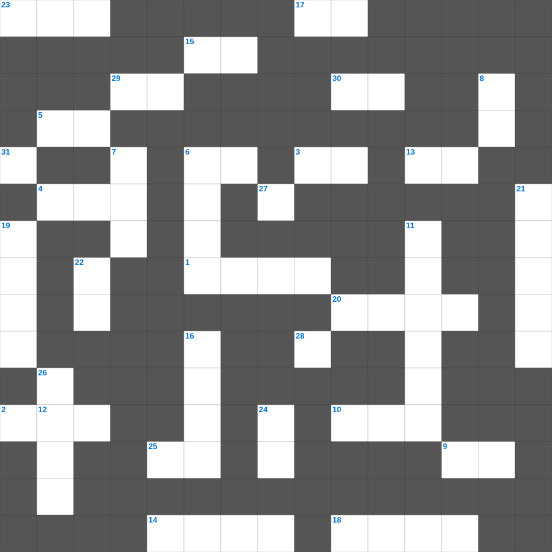

성경 속 사랑의 이야기
📌 서비스 정의
십자가로세로는 교회 주보와 주일학교에서 사용할 수 있는 성경 기반 가로세로 퍼즐 서비스입니다. 성경 인물, 사건, 핵심 구절을 바탕으로 제작되었습니다. 온라인 풀이 및 인쇄 기능을 제공합니다.
무료로 즐기는 성경 성경 성경 퍼즐! 35개의 힌트로 구성된 가로세로 낱말 퍼즐입니다. PC와 모바일 모두 지원되며, 정답을 바로 확인할 수 있어 혼자서도 쉽게 풀 수 있습니다.

📝 가로 힌트
1. 예수님이 산 위에서 전하신 복음의 핵심
1. 겨자씨 한 알 만한 믿음이 있으면 이 이것을 옮기리라
2. 가나 혼인잔치에서 물이 이것이 된 기적
3. 십계명이 새겨진 것
4. 종려나무 성읍이라 불리는 가장 오래된 성
5. 밤이 없겠고 등불과 이것이 쓸데없으니
6. 이것들을 증언하신 이가 이르시되 내가 진실로 속히 오리라 하시거늘
9. 여호와 이것: 평강의 하나님
10. 사드락, 메삭, 아벳느고의 신앙
13. 아무것도 이것하지 말고 오직 기도와 간구로
14. 모세가 발견된 상자
15. 이스라엘 백성이 광야에서 처음 진을 친 곳
17. 너는 내게 부르짖으라 내가 네게 이것하겠고
18. 나는 이것나무요 너희는 가지니
20. 노동자 하루 품삯에 해당하는 은화
23. 최후의 만찬에서 떡과 포도주를 나누심
25. 보이지 않는 것들의 실상이요 바라는 것들의 증거
27. 낮을 주관하게 하신 큰 광명체
28. 온유한 자가 기업으로 받는 것
29. 사흘 만에 다시 살아나신 기적
📝 세로 힌트
3. 야곱이 베개로 삼았던 것
6. 노아의 방주가 머문 산
7. 예수님이 십자가를 지고 오르신 언덕
7. 예수님이 십자가에 못 박히신 언덕
8. 마음이 이것한 자는 하나님을 볼 것임
11. 기드온의 용사들이 사용한 도구
12. 이것 하지 말라(남의 물건을 가져감)
16. 마태 마가 누가 다음 복음서
19. 범사에 이것하라
21. 열매 없는 이것나무를 예수님이 저주하심
22. 좋은 땅에 떨어진 씨앗은 몇 배의 결실?
24. 열 처녀 비유에서 준비해야 했던 것
26. 하나님과 대화하는 것
31. 골리앗의 칼이 보관되어 있던 곳
🧩 이 퍼즐에서 배우는 내용
이 퍼즐은 성경 속 사랑의 이야기의 핵심 단어와 개념을 자연스럽게 복습할 수 있도록 구성되었습니다. 주일학교 수업이나 개인 성경공부에서 학습 내용을 점검하는 용도로 바로 활용할 수 있습니다.
🧑🏫 교회 교육 자료 활용
이 퍼즐은 주일학교 교재 추천 자료로 활용할 수 있고, 주일학교 주보에 넣기 좋은 분량으로 구성되어 있습니다. 수업용 주일학교 교안에 활동지로 붙이거나, 예배 후 복습용 주일학교 공과교재로 바로 사용할 수 있습니다.
🏷️ 키워드
성경 성경 퍼즐, 성경, 십자가로세로, 성경퀴즈, 말씀퀴즈, 가로세로퍼즐, 주일학교 교재 추천, 주일학교 주보, 주일학교 교안, 주일학교 공과교재